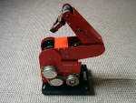
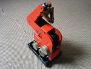
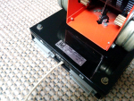
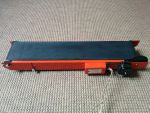

Учебен робот РОБКО-01
През 80-те години на 20-ти век, когато на запад по екраните са се вихрили Робокоп и Терминаторът, тук, в тогавашната Народна Република България погледите на млади и стари са се спирали върху едни по-малки, но също интересни и завладяващи роботи. Това са роботите от серия Робко, предвождани от РОБКО 01, тях ще разгледаме днес. РОБКО 01 не е киборг убиец или роботизиран пазител на реда, а робот с учебна цел! Базовият комплект Робко се състои от три модула, това са робот ръка с официално име „МИНИ РОБОТ РОБКО 01“, конвейерна лента „ТРАНСПОРТЬОР ТР-1“, и въртяща се маса с име „МАСА ВЪРТЯЩА МВ-1“, или поне това пише на етикетите на модулите. Серията роботи Робко са били разработени в ИТКР-БАН (или поне това се е твърдяло от официалните източници едно време) с цел обучение по роботика и кибернетика. Самите модули са се произвеждали в завода за медицинска апаратура в град София. Роботите Робко не са се продавали на частни лица, а са се използвали с учебна цел. Множество училища, гимназии, техникуми, университети, са били оборудвани с голяма бройка комплекти Робко, като вероятно комплектът е изнасян и за съветските страни. 
Как всъщност работи?
РОБКО 01 е направен да работи с компютрите от ИМКО серията и Правец 8 серията. Основния модул РОБКО 01 се свързва с компютър от Правец 8 серията чрез специална карта контролер, която се включва в един от разширителните слотове на машината. От другата страна тази карта контролер има специален жак, който влиза в един от двата порта на РОБКО 01, а във втория порт се включва един от другите два модула. Така заедно може да работят само РОБКО 01 и въртящата се маса, или РОБКО 01 и конвейерната лента, но не и масата и лентата едновременно, или и трите заедно. И трите модула черпят енергия един през друг от един и същ външен захранващ блок. Този захранващ блок подава 12 волта при 5 ампера към Робко модулите. На предния панел има две банан щекер букси в които се включва захранващия кабел на РОБКО 01. Устройството на работа на РОБКО 01 се състои от 6 на брой стъпкови мотори, които задвижват зъбни колела, чрез които се навиват или развиват няколко различни по дължина корди, с които се контролират движенията на ръката робот в пет степени. Тези 6 стъпкови мотора са разположени по 3 от всяка страна на РОБКО 01, правени са в завода за асинхронни двигатели в град Пловдив, завод който работи и днес. На снимки съм виждал и стъпкови мотори с различен етикет, произведени от ИЗОТ. Движещата се част на РОБКО 01 е монтирана върху здрава стабилна основа която има четири гумени крачета, в тази основа е монтирана и дънната платка на РОБКО 01. С тази стабилна конструкция РОБКО 01 може да вдига предмети с тегло до 250 грама. От задната страна на основата са двата порта, един за връзка с картата контролер, и един за връзка с останалите модули, които съответно се включват един по един. Състоянието на моята бройка РОБКО 01 е отлично, по боята има една-две много леки драскотини, които сигурно са се получили по време на съхранение, а не на работа. На цвят моята бройка е ярко оранжева. На снимки съм виждал РОБКО 01 и в жълт, в червен, и в зелен цвят, но е възможно да има направени бройки и в други цветове.
Конвейрната лента
Минаваме към конвейерната лента, тя е със значително по-елементарна конструкция. Всичко на всичко, тук има един стъпков мотор задвижващ лентата в двете посоки. Самата движеща се лента е изработена от едно дълго парче черна изкуствена кожа. Парчето е залепено в двата си края, формирайки един тесен но доста дълъг колан. Този колан е разположен върху два валяка, на един от тези валяци има зъбно колело. Стъпков мотор разположен в близост до зъбното колело завърта валякът, като този стъпков мотор е различен от тези при РОБКО 01, но вероятно има същите параметри. Цялата идея на конвейерната лента е върху нея да се разположи даден предмет, и докато лентата се движи, този предмет трябва да се премести от една позиция във втора, като за целта естествено се използва ръката робот управлявана от Правец 8. Това упражнение лесно показва на обучаващите се основните принципи на роботика и кибернетика, и служи като практическа подготовка за работа с индустриални роботи. Основата на конвейерната лента която имам аз е същата на цвят като РОБКО 01, ярко оранжева. Виждал съм на снимки и жълта, предполагам също е имало и други цветове
Коментари
В БАН работят предимно с крадени технолгии и затова бъгарски учени няма-има български ченгета,които работят с крадени от запада технологии!Цял отдел в ДС е съществувал само за кражба на чужди технологии!
Напиши коментар